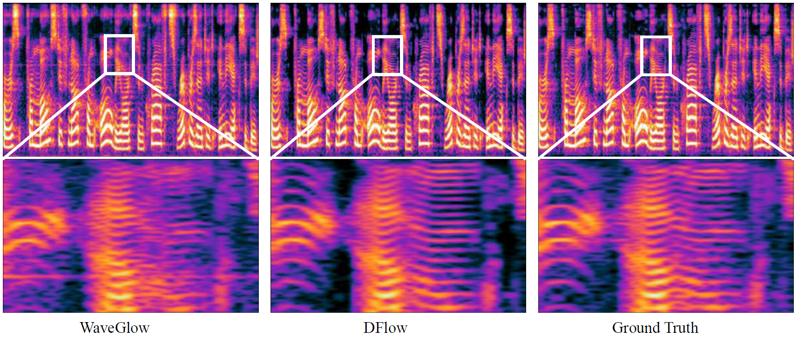

Abstract.
In this work, we present DFlow, a novel generative framework that combines Normalizing Flow (NF) with a Denoising AutoEncoder (DAE), for high-fidelity waveform generation. With a tactfully designed structure, DFlow seamlessly integrates the capabilities of both NF and DAE, resulting in a significantly improved performance compared to the standard NF models. Experimental results showcase DFlow's superiority, achieving the highest MOS score among the existing methods on commonly used datasets and the fastest synthesis speed among all likelihood models. We further demonstrate the generalization ability of DFlow by generating high-quality out-of-distribution audio samples, such as singing and music audio. Additionally, we extend the model capacity of DFlow by scaling up both the model size and training set size. Our large-scale universal vocoder, DFlow-XL, achieves highly competitive performance against the best universal vocoder, BigVGAN.
Overview

Mel-spectrograms of waveforms generated by WaveGlow, DFlow, and the ground truth, with zoomed-in views of high-frequency details. Both the waveforms generated by DFlow and the ground truth exhibit clear harmonic components.
However, the one generated by WaveGlow not only has blurry harmonic components but also periodic noises.
All models are trained on the LJ-Speech dataset. The audio samples are selected from the LJ-Speech testset.
DFlow
WaveGlow
DiffWave
HiFi-GAN
Ground-truth
Section 2: Results on the VCTK dataset
All models are trained on the VCTK dataset.
2.1 Results on the in-domain testset Audio samples are selected from the testset of VCTK.
DFlow
WaveGlow
HiFi-GAN
Ground-truth
2.2 Results on the out-of-domain testset The audio samples collected from MUSDB18-HQ, including singing and music audio.
DFlow
WaveGlow
HiFi-GAN
Ground-truth
Section 3: DFlow with Large-Scale Training
All models are trained on the LibriTTS dataset.
3.1 Comparison with BigVGAN and Big-HFi-GAN The audio samples of BigVGAN and Big-HFi-GAN are collected from BigVGAN's demo page.
DFlow-XL
DFlow-L
BigVGAN
Big-HiFi-GAN
Ground-truth
3.2 Results on the in-domain testset Audio samples are selected from the testset of LibriTTS.
DFlow-XL
DFlow-L
BigVGAN
Ground-truth
3.3 Results on the OOD testset Audio samples from the OOD testset, including singing and music audio.
DFlow-XL
DFlow-L
BigVGAN
Ground-truth
Section 4: Manipulating on latent variables
We demonstrate that DFlow inherits the capability of latent variable manipulation from the standard NF.
4.1 Low temperature sampling One interesting property of NF models is the ability to perform low-temperature sampling by decreasing the variance of the known prior during the sampling phase.
This though decreases the diversity of the samples, increases the quality of each individual sample.
Similar to standard NF models, DFlow inherits the ability of low-temperature sampling from NF.
t=0.5
t=0.7
t=1.0
4.2 Partial editing DFlow also inherits the ability of partial editing from the standard NF models. For the following sample, we lengthen the last second to 1.2 second.